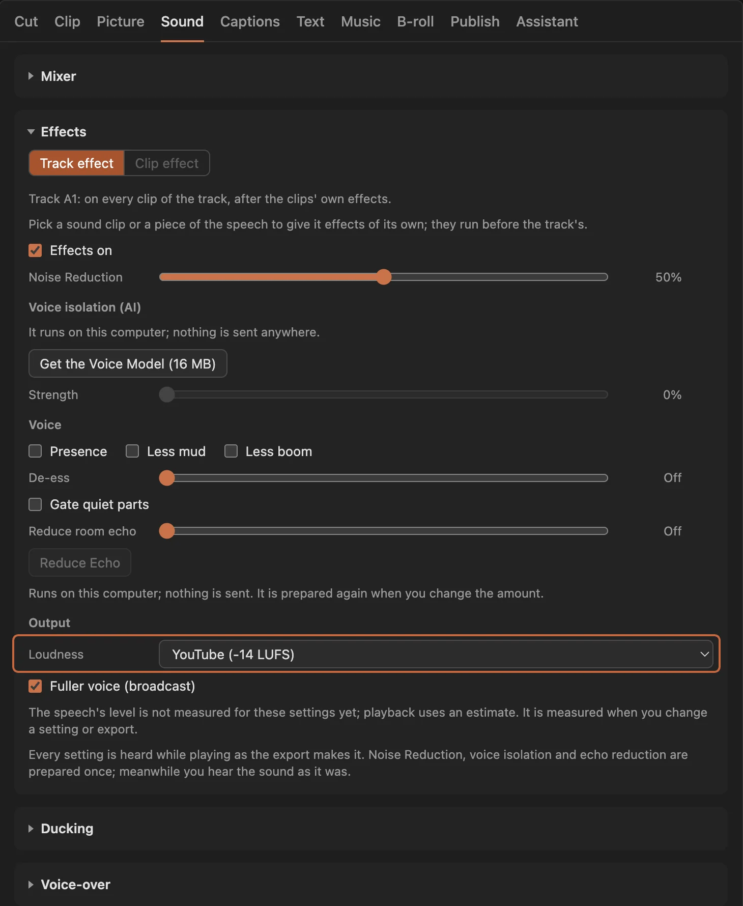
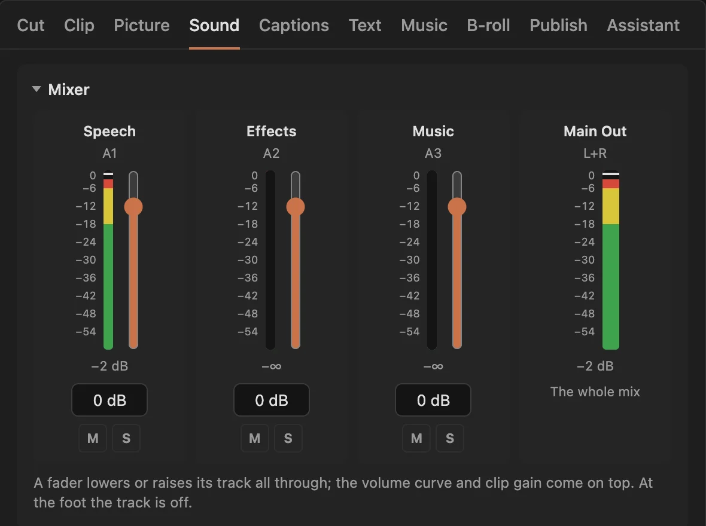
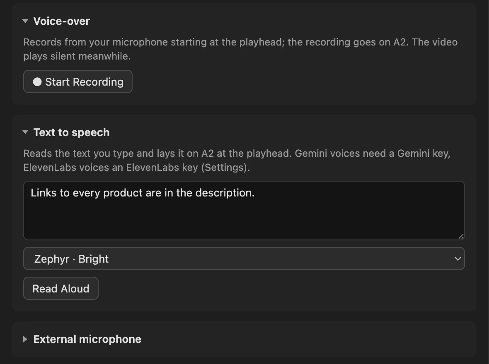

Sound and Mixer
The Sound tab cleans the voice, sets it to the right loudness and keeps the music under it. Every setting is heard while playing as the export makes it.

Mixer
One fader for each track: Speech, Effects, Music, and Main Out for the whole mix, with meters while playing. A fader lowers or raises its track all through; at the foot the track is off. Double-click a fader (or Alt and a click) to set it back to 0 dB.

Effects
Effects work on a whole track (Track effect) or on one clip or piece of the speech (Clip effect); a clip's own effects run before its track's. Effects on switches them all.
- Noise Reduction: takes away the hum of the room.
- Voice isolation (AI): keeps the speech and drops the rest. It runs on this computer; Get the Voice Model (16 MB) downloads its model once, then Clean the Voice and Strength.
- Voice: Presence, Less mud, Less boom, De-ess and Gate quiet parts.
- Reduce room echo: set the amount, then Reduce Echo. It runs on this computer.
Output
- Loudness: YouTube (-14 LUFS), Podcast (-16 LUFS) or Leave As Is. The speech is measured and brought to that level.
- Peak Level: the loudest the mix may get.
- Fuller voice (broadcast).
Ducking
Dip my music and sounds under the speech: while you speak, your own music and sounds go down by the Dip Amount, and come back up smoothly after it over the Fade. Music made by the app and effects from the Sound Effects library do not dip.
Voice-over and text to speech
- Voice-over: ● Start Recording records from your microphone from the playhead, on A2; the video plays silent meanwhile.
- Text to speech: type the Text to read, pick a Voice and press Read Aloud. It goes on A2 at the playhead. Gemini voices need a Gemini key, ElevenLabs voices an ElevenLabs key.

External microphone
A microphone recorded apart is matched to the recording by its sound and replaces the camera's: Add Microphone Recording…. Back to Camera Sound undoes it.